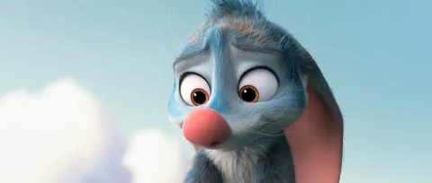
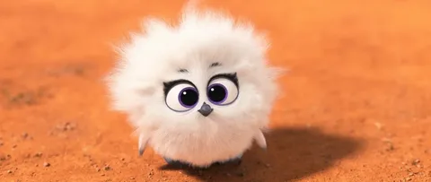
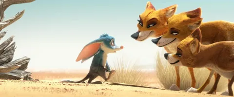
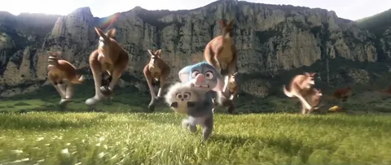

Bilby — короткометражный анимационный фильм студии DreamWorks Animation, выпущенный в 2018 году. Действие происходит в суровых условиях австралийского аутбэка.
История рассказывает о сумчатом барсуке (билби) по имени Перри, который пытается выжить в пустыне, но неожиданно для себя становится защитником маленького птенца альбатроса по имени Кайли. Несмотря на то, что Перри изначально не хочет брать на себя ответственность, он раз за разом спасает птенца от хищников, демонстрируя храбрость и зарождающуюся привязанность.
Мультфильм полностью лишён диалогов — вся эмоциональная нагрузка передаётся через анимацию, мимику персонажей и музыку. Лента вошла в шорт-лист премии «Оскар» в категории «Лучший анимационный короткометражный фильм».
Что вас тронуло в этой истории? Оставьте свою мысль — она сохранится в вашем браузере и появится в списке ниже.
🌵
Пока здесь тихо, как в аутбэке.
Будьте первым — оставьте свою мысль!